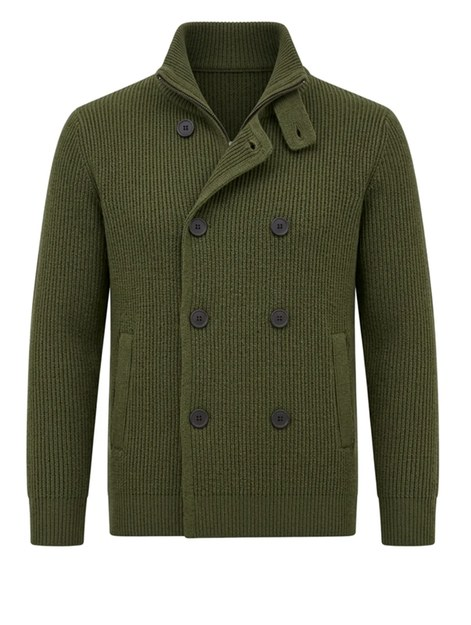
01 · The Peacoat's Cousin
British-Style Jacquard Knit
Double-breasted, ribbed, cut like a peacoat that decided knitwear was faster to put on. Olive reads as neutral as navy once the room gets dark enough.
Shop the pieceTwo of these already hang in the house — one on the stairs in the Living Room, one in the Study, cut for colder work. This is the rest of the rail: fourteen polos and cardigans, all knit, all the kind of piece that looks like it was already his before it arrived.

The Polo · Level 27, The Compliment
Sleeves pushed up, desk lamp on. This is the version of him that's still working.

01 · The Peacoat's Cousin
Double-breasted, ribbed, cut like a peacoat that decided knitwear was faster to put on. Olive reads as neutral as navy once the room gets dark enough.
Shop the piece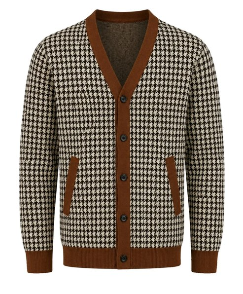
02 · The Restraint
Houndstooth in black and cream, doing what a print usually can't — reading as restraint instead of noise.
Shop the piece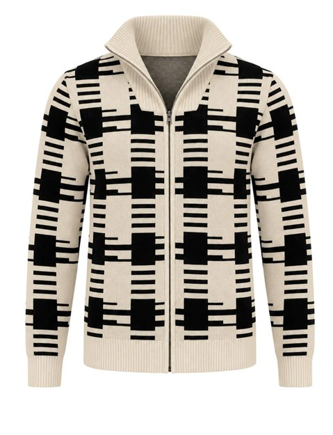
03 · The Inherited One
A check that looks like it's been through one too many wash cycles on purpose — the kind of pattern that reads as inherited rather than bought.
Shop the piece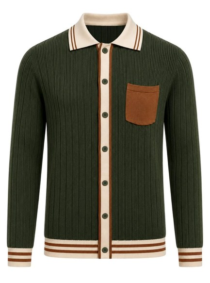
04 · The Off-Duty Uniform
Forest green, shawl collar, just enough texture to read as more than a sweater. Worn open, over nothing, on nights that don't need a tie to prove anything.
Shop the piece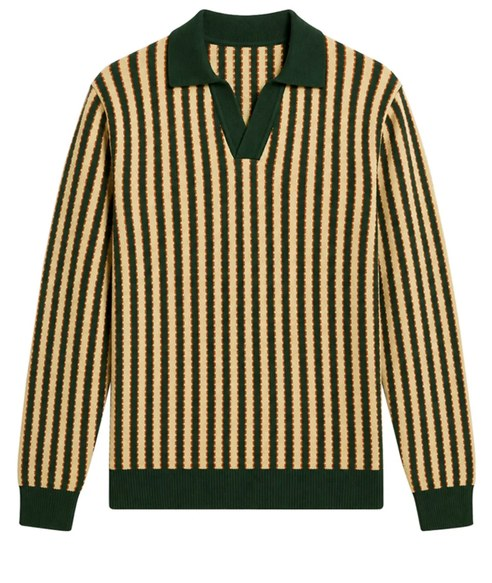
05 · The Unearned Letter
Yellow and navy stripes, a rowing-club energy he never actually earned. Worn anyway, because nobody's checking.
Shop the piece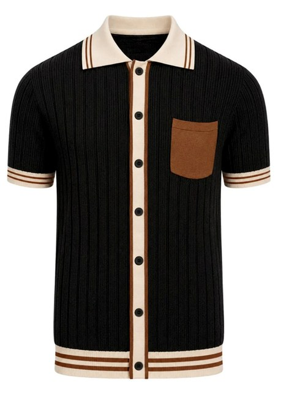
06 · The Quiet Kind
Black, cropped collar, the kind of quiet you have to look twice to notice is expensive.
Shop the piece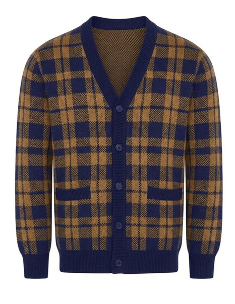
07 · The Letterman's Cousin
Blue and mustard plaid, built like a letterman's jacket had a quieter, older cousin who read more.
Shop the piece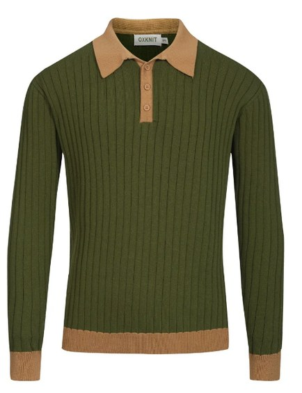
08 · The Texture
Hunter green, a textured knit almost cratered in places — the kind of detail that reads as intentional the moment you actually touch it.
Shop the piece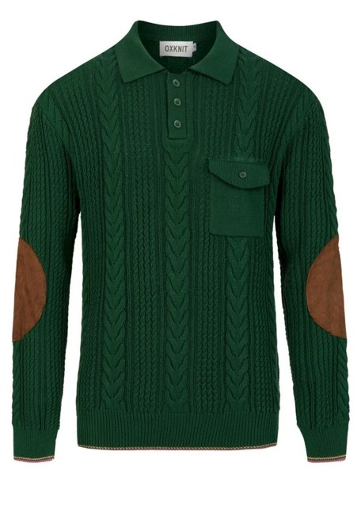
09 · The Contradiction
Faux leather elbow patches on a knit polo, which sounds like a contradiction until you see it holding its shape after the fourth wear.
Shop the piece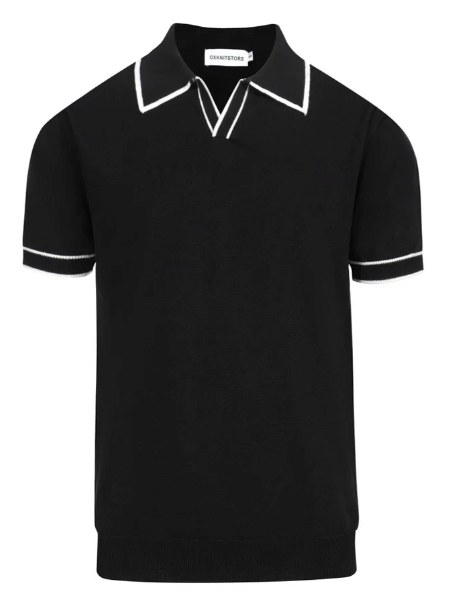
10 · The Time Traveler
A geometric tipped collar, mod enough to look at home in 1967 and 2026 with equal confidence.
Shop the piece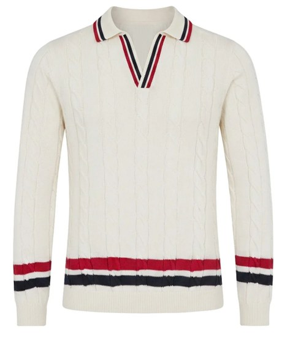
11 · The Original
Cream cable knit, red and navy at the collar — the kind of polo that was already a classic before he ever put it on.
Shop the piece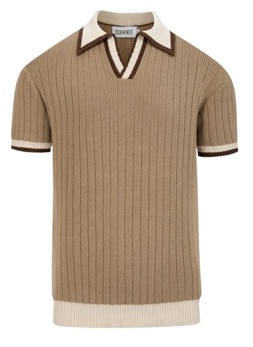
12 · The Quieter Shade
The same idea in tan, for the days that call for something one shade quieter.
Shop the piece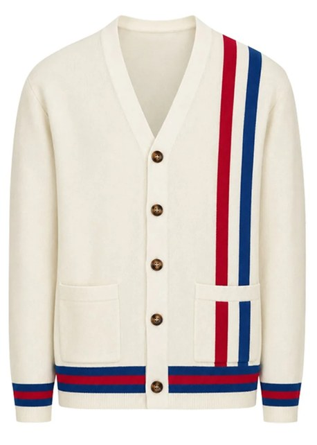
13 · The Varsity Nod
Cream with navy and red racing stripes down the placket — the closet's one deliberate nod to varsity.
Shop the piece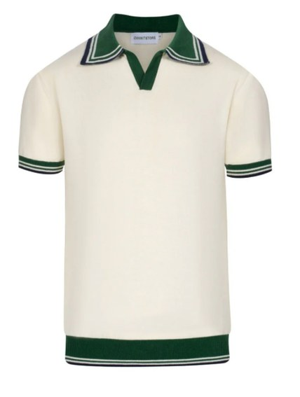
14 · The In-Between
Cream with a green-and-navy striped collar, open at the throat — built for the exact five degrees between too warm for a jacket and too cool for nothing at all.
Shop the pieceTwo pieces already live in the house. The rest of the rail is here.
Also found in The Living Room and The Study · Level 27 → · Level 27 →